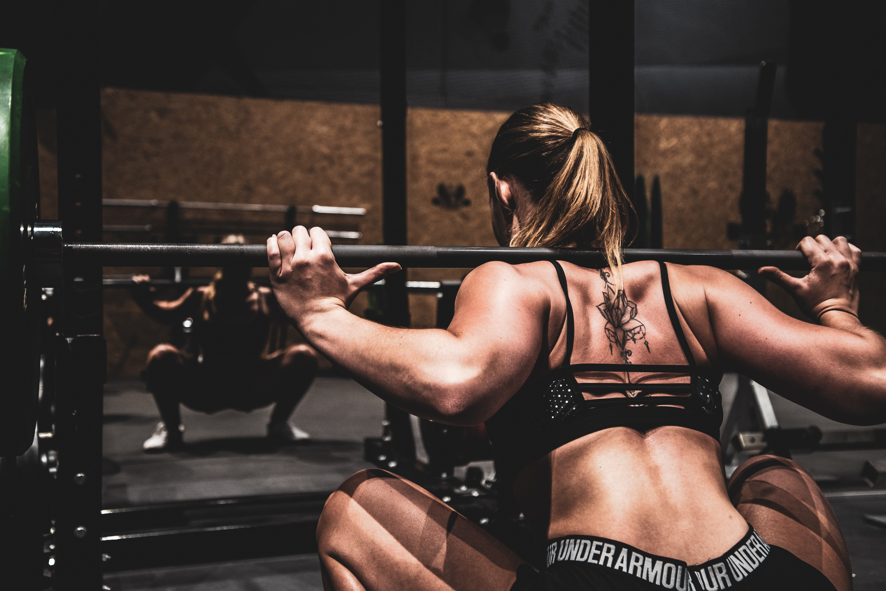
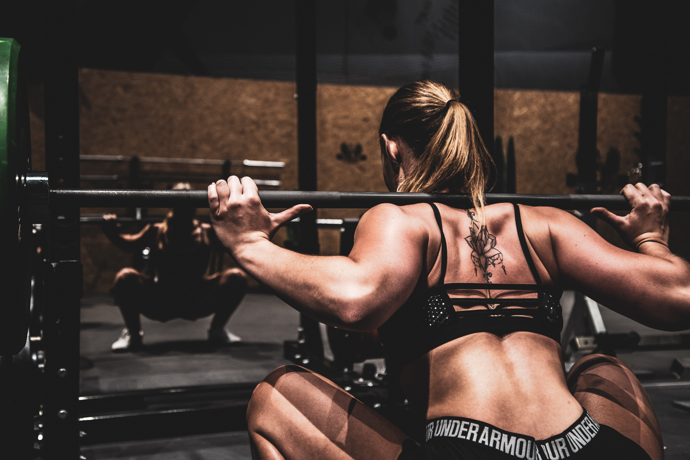

除了塑造好身材，透過健身可以刺激我們身體的肌肉，再搭配飲食的控制，這能大大幫助我們的肌肉量增加，以及讓我們的肌肉更加的結實。
如果你對健身仍然保持著懷疑的態度，那你大可以去看看你喜歡的健身老戲骨幹，他們是如何做到年過50/60歲，

 

| 每天活動量 | 體重過輕者所需熱量 | 體重正常者所需熱量 | 體重過重,肥胖者所需熱量 |
|---|---|---|---|
| 輕度工作 | 35大卡 x 目前體重(公斤) | 30大卡 x 目前體重(公斤) | 20~25大卡 x 目前體重(公斤) |
| 中度工作 | 40大卡 x 目前體重(公斤) | 35大卡 x 目前體重(公斤) | 30大卡 x 目前體重(公斤) |
| 重度工作 | 45大卡 x 目前體重(公斤) | 40大卡 x 目前體重(公斤) | 35大卡 x 目前體重(公斤) |
1計算BMI:
一位民眾身高160公分，體重65公斤，BMI25.4kg/m2(=65÷1.6÷1.6)，體重屬於「過重」。
2計算所需熱量:
因他的工作為坐辦公室，屬輕量工作，每天攝取熱量應在1300至1625大卡之間(=20~25大卡*65公斤)